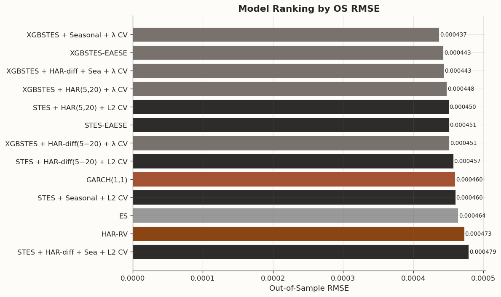
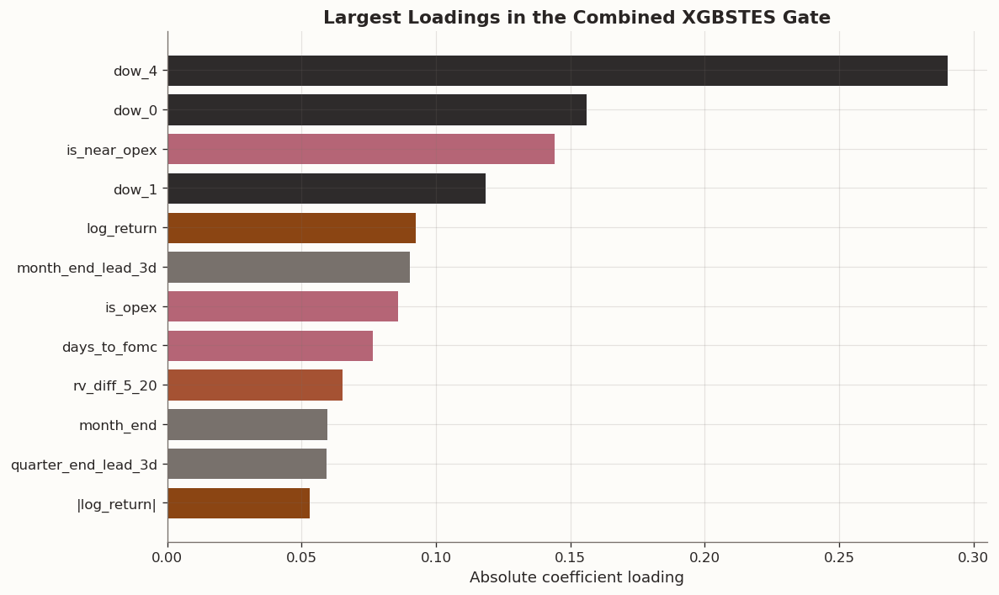

Volatility Forecast (Part 4: Adding More Features)
2026-03-03
1 Introduction
In Part 3 of this series, we generalized the Smooth-Transition Exponential Smoothing (STES) framework introduced in Part 2 by replacing the linear gate with an XGBoost-based gate that determines how much weight, or learning rate, to assign to the current observation. The resulting XGBSTES specification improved on both STES and simple Exponential Smoothing (ES).
In a separate signature-methods series, Part 4 tested signature features in STES and XGBSTES and found limited incremental value. Here I return to feature expansion from a more classical volatility-modeling angle, focusing on Heterogeneous Autoregressive (HAR) components and simple calendar-based covariates.
I also broaden the set of benchmark models. Realized-volatility forecasting has traditionally leaned on linear autoregressive structures: HAR captures short-, medium-, and long-horizon persistence, while the ARCH/GARCH family captures volatility clustering. GARCH, in particular, is similar to an Exponential Smoothing (ES) of past squared returns (as discussed in Part 1). The dynamic smoothing models in this series offer a nonlinear alternative by allowing the smoothing parameter to vary with the observed state.
That leads to three practical questions:
How do the dynamic smoothing models compare with classical baselines? We evaluate STES and XGBSTES against HAR-RV and GARCH(1,1) under a rigorous out-of-sample design.
What do HAR, calendar, and event features actually add? We isolate the marginal predictive contribution of HAR-style features, calendar indicators (day-of-week and business period-end structure), and scheduled event dates (FOMC, options expiration, IMM) when they enter the gating equations.
Which added features matter most once they are included? Rather than building a long behavioral story around the gate, I close with a simple coefficient readout that shows which variables receive the largest loadings in the richest specification.
We use the same SPY sample spanning January 2000 through December 2023. To stay comparable with Part 3, we discard the first 200 observations as a warm-up period, use observations 201 through 4,000 for training, and reserve the remainder for out-of-sample evaluation. The target variable is next-day squared return.
2 Methodology: Baseline and Augmented Models
We compare five baseline architectures before adding features. Let y_t = r_t^2 denote realized variance at time t and let \hat{y}_{t+1|t} denote the one-step-ahead forecast.
HAR-RV: OLS regression on daily (RV_t), weekly (\overline{RV}^{(5)}_t), and monthly (\overline{RV}^{(22)}_t) rolling realized variance averages. This is the standard linear benchmark from Corsi (2009).
\hat{y}_{t+1|t} = \beta_0 + \beta_d RV_t + \beta_w \overline{RV}^{(5)}_t + \beta_m \overline{RV}^{(22)}_t,
with
\overline{RV}^{(5)}_t = \frac{1}{5}\sum_{i=0}^{4} RV_{t-i},
\qquad
\overline{RV}^{(22)}_t = \frac{1}{22}\sum_{i=0}^{21} RV_{t-i}.
GARCH(1,1): The workhorse of conditional variance modeling. We fit it using maximum likelihood and extract one-step-ahead variance forecasts.
\sigma_{t+1}^2 = \omega + \alpha r_t^2 + \beta \sigma_t^2,
and use \hat{y}_{t+1|t} = \sigma_{t+1}^2.
ES: Exponential Smoothing with a static smoothing parameter \alpha, optimized over the training set.
\hat{y}_{t+1|t} = \alpha y_t + (1-\alpha)\hat{y}_{t|t-1}.
STES: Smooth-Transition ES where \alpha_t = \sigma(\mathbf{x}_t^\top \boldsymbol{\beta}) adapts to the current state via a logistic gate.
\alpha_t = \frac{1}{1+e^{-\mathbf{x}_t^\top\boldsymbol{\beta}}},
\qquad
\hat{y}_{t+1|t} = \alpha_t y_t + (1-\alpha_t)\hat{y}_{t|t-1}.
XGBSTES: Our end-to-end variant that replaces the linear gate with a gradient-boosted linear model (coordinate-descent booster).
\alpha_t = \frac{1}{1+e^{-f_{\text{XGB}}(\mathbf{x}_t)}},
\qquad
\hat{y}_{t+1|t} = \alpha_t y_t + (1-\alpha_t)\hat{y}_{t|t-1}.
We report three metrics: RMSE (standard error magnitude), MAE (robust to outliers), and QLIKE (the natural loss function for variance forecasts, which penalizes under-prediction more heavily).
We augment the gate’s feature set with HAR-style rolling variance measures in two ways:
HAR(5,20): We add the 5-day and 20-day rolling mean of squared returns (\overline{RV}^{(5)}_t, \overline{RV}^{(20)}_t) as separate features in the gating equation.
HAR-diff(5−20): We add a single feature \overline{RV}^{(5)}_t - \overline{RV}^{(20)}_t, which captures whether short-term volatility is above or below its longer-term average, a volatility momentum signal.
Since these additions increase feature dimensionality and correlation structure, we use stronger cross-validated regularization controls.
For benchmark XGBSTES (no HAR expansion), the CV grid is:
\{\texttt{min\_child\_weight},\, \texttt{learning\_rate},\, \texttt{max\_depth}\}
with 3 candidate tuples.
For HAR-augmented XGBSTES, we use an expanded grid that keeps those 3 baseline tuples and additionally searches:
\texttt{reg\_lambda} \in \{0.1,\,1.0,\,5.0,\,10.0\},
so the search grows from 3 to 3 \times 4 = 12 candidates.
This expansion accommodates the richer gate feature set. L2 shrinkage on the gblinear gate becomes more important for controlling variance, reducing coefficient inflation from collinearity, and preserving out-of-sample stability. At the same time, we keep the original structural hyperparameters unchanged so the comparison to the benchmark remains fair: the only new search axis is regularization strength.
For STES, we similarly use CV over L2 penalties \lambda \in \{0, 0.001, 0.01, 0.1, 1.0\} for the same reason.
IS/OS comparison — baselines vs HAR-augmented models (variance level)
IS RMSE
OS RMSE
OS MAE
OS QLIKE
Model
HAR-RV
0.000500
0.000473
0.000145
1.687662
GARCH(1,1)
0.000504
0.000460
0.000139
1.561044
ES
0.000506
0.000464
0.000140
1.619823
STES-EAESE
0.000501
0.000451
0.000135
1.637744
XGBSTES-EAESE
0.000502
0.000443
0.000132
1.685679
STES + HAR(5,20) + L2 CV
0.000497
0.000450
0.000134
1.652876
XGBSTES + HAR(5,20) + λ CV
0.000500
0.000448
0.000135
1.713907
STES + HAR-diff(5−20) + L2 CV
0.000497
0.000457
0.000133
1.625428
XGBSTES + HAR-diff(5−20) + λ CV
0.000499
0.000451
0.000130
1.680780
2.2 Intermediate Assessment
The benchmark XGBSTES specification, estimated on the original three return-based inputs, remains the strongest performer in out-of-sample terms, reinforcing the value of dynamic state-dependent smoothing relative to static alternatives. Augmenting the gate with HAR information yields only incremental gains and only when regularization is tuned carefully, which is consistent with the added collinearity introduced by overlapping variance aggregates. In this setting, the parsimonious HAR-diff(5−20) construction performs comparably to the full HAR(5,20) expansion, indicating that most of the incremental signal is captured by the short-versus-long volatility spread rather than by a higher-dimensional representation. This pattern suggests diminishing marginal returns from further return-derived feature engineering and motivates the next step of incorporating non-return covariates, namely calendar and scheduled event indicators.
2.3 Calendar and Scheduled Event Features
We now look at seasonal patterns in volatility: day-of-week effects, business month- and quarter-end rebalancing pressure, year-end balance-sheet effects, and variance shifts around scheduled macroeconomic announcements and derivatives-calendar dates.
We construct two groups of features:
Calendar flags: One-hot encoded day-of-week indicators, XNYS business month/quarter/year-end flags, and separate 3-trading-day lead-window indicators for each of those period-end boundaries.
Event dates: For each of FOMC meetings, equity options expirations (OpEx), and quarterly IMM dates, we compute a same-day event flag, a days-until-event counter, and a binary near-event flag (activated within 3 business days). In our implementation, IMM refers to the third Wednesday of March, June, September, and December, which we use as a quarterly futures-calendar anchor. This yields 9 event features total.
Since the target is next-day squared return, these deterministic features are aligned to the forecast date rather than the forecast origin. That is, the row used to forecast variance on day t+1 receives the known-ahead calendar/event labels for day t+1, not day t.
The period-end indicators are defined on the XNYS trading-session calendar. A end flag triggers only on the final trading session of the month, quarter, or year, while the lead-window flag triggers on the preceding three trading sessions and excludes the end date itself.
These features are non-autoregressive and carry no direct information about past returns. They test whether the gate can learn to adjust \alpha_t around known calendar structure and scheduled events that are already visible when the forecast is formed.
Build forecast-date calendar + event-date features via AlphaForge templates
from alphaforge.features import CalendarFlagsTemplate, EventDateTemplatefrom alphaforge.features.template import SliceSpec as AFSliceSpec# --- Calendar flags: one-hot DOW + strict XNYS period-end flags ---cal_tmpl = CalendarFlagsTemplate()cal_slice = AFSliceSpec( start=SAMPLE_START, end=SAMPLE_END, entities=[SAMPLE_TICKER],)cal_ff = cal_tmpl.transform( ctx_sample, params={"calendar": "XNYS","flags": ("dow", "is_month_end", "is_quarter_end", "is_year_end"),"one_hot_dow": True, },slice=cal_slice, state=None,)# --- Event dates: FOMC + OpEx + IMM ---evt_tmpl = EventDateTemplate()evt_ff = evt_tmpl.transform( ctx_sample, params={"calendar": "XNYS", "events": ("fomc", "opex", "imm"), "max_days": 30, "near_window": 3},slice=cal_slice, state=None,)def _next_session_lookup_index(source_idx, target_idx):"""Map each forecast-origin date in target_idx to the next session in source_idx.""" source_dates = pd.DatetimeIndex(source_idx).normalize()if source_dates.tz isnotNone: source_dates = source_dates.tz_convert(None) source_dates = pd.DatetimeIndex(source_dates.unique()).sort_values() target_dates = pd.DatetimeIndex(target_idx).normalize()if target_dates.tz isnotNone: target_dates = target_dates.tz_convert(None) positions = source_dates.searchsorted(target_dates, side="left") next_positions = positions +1if np.any(next_positions >=len(source_dates)):raiseValueError("Cannot align seasonal features to forecast date: missing next session in source index.")return pd.DatetimeIndex(source_dates[next_positions])def _extract_entity(ff, entity, target_idx, align_to="same_day"):"""Drop entity level and align either to same-day or next-session feature dates.""" df = ff.X.xs(entity, level="entity_id").sort_index() col_rename = {}for fid in df.columns:if fid in ff.catalog.index: col_rename[fid] = ff.catalog.loc[fid, "transform"]else: col_rename[fid] = fid df = df.rename(columns=col_rename) df_dates = df.index.normalize()if df_dates.tz isnotNone: df_dates = df_dates.tz_convert(None) df.index = df_dates target_dates = target_idx.normalize()if target_dates.tz isnotNone: target_dates = target_dates.tz_convert(None)if align_to =="forecast_date": lookup_dates = _next_session_lookup_index(df.index, target_idx)elif align_to =="same_day": lookup_dates = target_dateselse:raiseValueError("align_to must be 'same_day' or 'forecast_date'") out = df.reindex(lookup_dates) out.index = target_idxreturn out.dropna(how="all")def _add_period_end_lead_windows(cal_df, strict_cols, lead=3):"""Add flags for the 1-to-lead sessions immediately before each strict period end.""" lead_df = pd.DataFrame(index=cal_df.index)for strict_col in strict_cols: period_name = strict_col.replace("is_", "") lead_hits =sum(cal_df[strict_col].shift(-k).fillna(0.0) for k inrange(1, lead +1)) lead_df[f"pre_{period_name}_{lead}d"] = (lead_hits >0).astype(float)return pd.concat([cal_df, lead_df], axis=1)cal_df = _extract_entity(cal_ff, SAMPLE_TICKER, X_par.index, align_to="forecast_date")strict_period_end_cols = ["is_month_end", "is_quarter_end", "is_year_end"]ordered_dow_cols = [c for c in cal_df.columns if c.startswith("dow_")]cal_df = cal_df[ordered_dow_cols + strict_period_end_cols]cal_df = _add_period_end_lead_windows(cal_df, strict_period_end_cols, lead=3)evt_df = _extract_entity(evt_ff, SAMPLE_TICKER, X_par.index, align_to="forecast_date")# Combine into a single seasonal feature matrix aligned to the forecast date t+1seasonal_df = pd.concat([cal_df, evt_df], axis=1)seasonal_cols =list(seasonal_df.columns)
Fit STES and XGBSTES models with seasonal features
all_models = [# Baselines ("HAR-RV", har_pred_is, har_pred_os), ("GARCH(1,1)", garch_pred_is, garch_pred_os), ("ES", es_pred_is, es_pred_os), ("STES-EAESE", stes_pred_is, stes_pred_os), ("XGBSTES-EAESE", xgb_pred_is, xgb_pred_os),# HAR-augmented ("STES + HAR(5,20) + L2 CV", stes_har_cv_pred_is, stes_har_cv_pred_os), ("XGBSTES + HAR(5,20) + λ CV", xgb_har_cv_pred_is, xgb_har_cv_pred_os), ("STES + HAR-diff(5−20) + L2 CV", stes_hdiff_cv_pred_is, stes_hdiff_cv_pred_os), ("XGBSTES + HAR-diff(5−20) + λ CV", xgb_hdiff_cv_pred_is, xgb_hdiff_cv_pred_os),# Seasonal ("STES + Seasonal + L2 CV", stes_sea_cv_pred_is, stes_sea_cv_pred_os), ("XGBSTES + Seasonal + λ CV", xgb_sea_cv_pred_is, xgb_sea_cv_pred_os), ("STES + HAR-diff + Sea + L2 CV", stes_hdiff_sea_cv_pred_is, stes_hdiff_sea_cv_pred_os), ("XGBSTES + HAR-diff + Sea + λ CV", xgb_hdiff_sea_cv_pred_is, xgb_hdiff_sea_cv_pred_os),]full_table = pd.DataFrame({"Model": [m[0] for m in all_models],"IS RMSE": [rmse(actual_is, m[1]) for m in all_models],"OS RMSE": [rmse(actual_os, m[2]) for m in all_models],"OS MAE": [mae(actual_os, m[2]) for m in all_models],"OS QLIKE": [qlike(actual_os, m[2]) for m in all_models],})display(style_results_table(full_table, precision=6, index_col="Model"))
Full IS/OS comparison — all model variants
IS RMSE
OS RMSE
OS MAE
OS QLIKE
Model
HAR-RV
0.000500
0.000473
0.000145
1.687662
GARCH(1,1)
0.000504
0.000460
0.000139
1.561044
ES
0.000506
0.000464
0.000140
1.619823
STES-EAESE
0.000501
0.000451
0.000135
1.637744
XGBSTES-EAESE
0.000502
0.000443
0.000132
1.685679
STES + HAR(5,20) + L2 CV
0.000497
0.000450
0.000134
1.652876
XGBSTES + HAR(5,20) + λ CV
0.000500
0.000448
0.000135
1.713907
STES + HAR-diff(5−20) + L2 CV
0.000497
0.000457
0.000133
1.625428
XGBSTES + HAR-diff(5−20) + λ CV
0.000499
0.000451
0.000130
1.680780
STES + Seasonal + L2 CV
0.000494
0.000460
0.000135
1.614890
XGBSTES + Seasonal + λ CV
0.000495
0.000437
0.000135
1.739551
STES + HAR-diff + Sea + L2 CV
0.000491
0.000479
0.000132
1.612161
XGBSTES + HAR-diff + Sea + λ CV
0.000494
0.000443
0.000133
1.732801
OS RMSE ranking bar chart
# Sort by OS RMSE for visual rankingchart_df = full_table[["Model", "OS RMSE"]].sort_values("OS RMSE", ascending=True).reset_index(drop=True)fig, ax = plt.subplots(figsize=(10, 6))# Color by model familydef _model_color(name):if"XGBSTES"in name:return BLOG_PALETTE[3]if"STES"in name:return BLOG_PALETTE[2]if"GARCH"in name:return BLOG_PALETTE[1]if"HAR"in name:return BLOG_PALETTE[0]return"#999999"colors = [_model_color(m) for m in chart_df["Model"]]bars = ax.barh(chart_df["Model"], chart_df["OS RMSE"], color=colors, edgecolor="white", linewidth=0.5)ax.set_xlabel("Out-of-Sample RMSE")ax.set_title("Model Ranking by OS RMSE", fontsize=13, fontweight="bold")ax.invert_yaxis()# Add value labelsfor bar, val inzip(bars, chart_df["OS RMSE"]): ax.text(bar.get_width() +0.000001, bar.get_y() + bar.get_height() /2,f"{val:.6f}", va="center", fontsize=8)fig.tight_layout()plt.show()

2.4 Final Assessment Before Statistical Tests
The full comparison extends the earlier intermediate results. The dynamic smoothing models still compare well with the classical benchmarks, but our set of added features does not add values. The narrow out-of-sample RMSE winner is the seasonal-only XGBSTES specification. The baseline XGBSTES model remains essentially right behind it, and the richer HAR-diff + calendar/event XGBSTES variant stays in the same neighborhood rather than clearly pulling away.
For STES, the linear-gate model does not benefit reliably from the richer feature sets, and the fully combined STES specification is actually the weakest of the STES variants in RMSE terms. So richer covariates do not automatically translate into a better gate. In a linear gate, extra predictors can just as easily introduce collinearity and estimation noise as genuine signal.
Calendar and event information appears genuinely useful, but the gains are small and model-dependent. The richer combined XGBSTES specification remains valuable for interpretation because it lets us study how return-based and timing features enter the gate together. However, in pure forecasting terms, the evidence points to timing-aware XGBSTES as the main empirical improvement.
When the ranking differences are this small, we need formal tests to decide whether the richer models are truly better or whether the apparent gains are within the range of sampling noise, and we also need to know whether any RMSE gains come with calibration trade-offs under a different loss function.
2.5 Statistical Tests
Point metrics such as RMSE, MAE, and QLIKE are informative, but ranking models by sample averages alone can be misleading in noisy volatility data. Small performance gaps may arise from sampling variability rather than true differences in predictive ability. We therefore complement the metric tables with formal inferential checks: the Diebold-Mariano test evaluates whether forecast-loss differentials are statistically distinguishable from zero, while Mincer-Zarnowitz regressions assess calibration quality (a well-calibrated forecast has slope \beta \approx 1 and intercept \alpha \approx 0).
Diebold-Mariano tests and Mincer-Zarnowitz regressions
# Recreate the forecast target locally so this cell does not depend on earlier table cells.actual_os = yh_te.values# ── Diebold-Mariano tests (3 key comparisons) ──────────────────────────# Loss differential: squared errorsdef _sq_loss(y, yhat):return (np.asarray(y) - np.asarray(yhat)) **2dm_pairs = [ ("Combined XGBSTES vs HAR-RV", xgb_hdiff_sea_cv_pred_os, har_pred_os), ("Combined XGBSTES vs GARCH(1,1)", xgb_hdiff_sea_cv_pred_os, garch_pred_os), ("Combined XGBSTES vs Baseline XGBSTES", xgb_hdiff_sea_cv_pred_os, xgb_pred_os),]dm_results = []for label, pred_a, pred_b in dm_pairs: loss_a = _sq_loss(actual_os, pred_a) loss_b = _sq_loss(actual_os, pred_b) res = diebold_mariano(loss_a, loss_b, h=1) dm_results.append({"Comparison": label,"DM Stat": res["dm_stat"],"p-value": res["p_value"],"Significant (5%)": "Yes"if res["p_value"] <0.05else"No", })dm_table = pd.DataFrame(dm_results)print("Diebold-Mariano Tests (squared error loss):")print(" Negative DM stat -> model A (the richer combined XGBSTES variant) has lower loss")display(style_results_table(dm_table, precision=4, index_col="Comparison"))# ── Mincer-Zarnowitz regressions (top 4 models) ────────────────────────mz_models = [ ("HAR-RV", har_pred_os), ("GARCH(1,1)", garch_pred_os), ("XGBSTES baseline", xgb_pred_os), ("XGBSTES + HAR-diff + Sea", xgb_hdiff_sea_cv_pred_os),]mz_results = []for label, pred in mz_models: mz = mincer_zarnowitz(actual_os, pred) mz_results.append({"Model": label,"alpha (const)": mz["params"]["const"],"beta (slope)": mz["params"]["beta"],"t(beta=1)": (mz["params"]["beta"] -1.0) / (mz["params"]["beta"] / mz["t_stats"]["beta"]) if mz["t_stats"]["beta"] !=0else np.nan,"R2": mz["r2"], })mz_table = pd.DataFrame(mz_results)print("\nMincer-Zarnowitz Regressions (y = alpha + beta*forecast + epsilon):")print(" A well-calibrated forecast has alpha ~= 0 and beta ~= 1")display(style_results_table(mz_table, precision=4, index_col="Model"))
Diebold-Mariano Tests (squared error loss):
Negative DM stat -> model A (the richer combined XGBSTES variant) has lower loss
DM Stat
p-value
Significant (5%)
Comparison
Combined XGBSTES vs HAR-RV
-1.2644
0.2062
No
Combined XGBSTES vs GARCH(1,1)
-1.0845
0.2783
No
Combined XGBSTES vs Baseline XGBSTES
0.1341
0.8933
No
Mincer-Zarnowitz Regressions (y = alpha + beta*forecast + epsilon):
A well-calibrated forecast has alpha ~= 0 and beta ~= 1
alpha (const)
beta (slope)
t(beta=1)
R2
Model
HAR-RV
0.0000
0.9197
-2.1192
0.2247
GARCH(1,1)
-0.0000
1.0190
0.5045
0.2652
XGBSTES baseline
0.0000
1.0701
2.0247
0.3197
XGBSTES + HAR-diff + Sea
-0.0000
1.1482
4.0140
0.3223
Code
# ── Diebold-Mariano tests (3 key comparisons) ──────────────────────────# Loss differential: QLIKE (more appropriate for variance forecasts)actual_os = yh_te.valuesdef _qlike_loss(y, yhat):"""Element-wise QLIKE loss: y/yhat - log(y/yhat) - 1. Both y and yhat are clamped to 1e-20 to avoid inf from log(0). Days with near-zero realized variance produce identical loss for all forecasts, so clamping does not affect model discrimination. """ y = np.asarray(y, dtype=float) yhat = np.asarray(yhat, dtype=float) y = np.maximum(y, 1e-20) yhat = np.maximum(yhat, 1e-20) ratio = y / yhatreturn ratio - np.log(ratio) -1.0dm_pairs = [ ("Combined XGBSTES vs HAR-RV", xgb_hdiff_sea_cv_pred_os, har_pred_os), ("Combined XGBSTES vs GARCH(1,1)", xgb_hdiff_sea_cv_pred_os, garch_pred_os), ("Combined XGBSTES vs Baseline XGBSTES", xgb_hdiff_sea_cv_pred_os, xgb_pred_os),]dm_results = []for label, pred_a, pred_b in dm_pairs: loss_a = _qlike_loss(actual_os, pred_a) loss_b = _qlike_loss(actual_os, pred_b) res_ql = diebold_mariano(loss_a, loss_b, h=1) dm_results.append({"Comparison": label,"DM (QLIKE)": res_ql["dm_stat"],"p (QLIKE)": res_ql["p_value"],"Sig QLIKE (5%)": "Yes"if res_ql["p_value"] <0.05else"No", })dm_table = pd.DataFrame(dm_results)print("Diebold-Mariano Tests (QLIKE loss):")print(" Negative DM stat -> model A (the richer combined XGBSTES variant) has lower loss")print(" QLIKE loss is more appropriate for variance forecasts (Patton, 2011)")display(style_results_table(dm_table, precision=4, index_col="Comparison"))
Diebold-Mariano Tests (QLIKE loss):
Negative DM stat -> model A (the richer combined XGBSTES variant) has lower loss
QLIKE loss is more appropriate for variance forecasts (Patton, 2011)
DM (QLIKE)
p (QLIKE)
Sig QLIKE (5%)
Comparison
Combined XGBSTES vs HAR-RV
0.6327
0.5270
No
Combined XGBSTES vs GARCH(1,1)
2.9685
0.0030
Yes
Combined XGBSTES vs Baseline XGBSTES
2.3569
0.0185
Yes
2.6 DM Results
The strongest RMSE performer is the seasonal-only XGBSTES specification, while the richer combined XGBSTES variant sits essentially in the same neighborhood as the baseline XGBSTES model rather than clearly ahead of it.
In the comparisons below I keep the combined XGBSTES specification as the reference point because it is the most fully augmented model in the notebook and the one used in the final coefficient table. Under squared error, that combined model still produces negative Diebold-Mariano statistics against HAR-RV, GARCH, and the baseline XGBSTES model, so its point forecasts remain directionally competitive. However, those differences are not statistically distinguishable from zero at the 5% level. Under QLIKE, the same model is still significantly worse than both GARCH and the baseline XGBSTES specification.
The Mincer-Zarnowitz regressions are also informative. GARCH again looks closest to proportional calibration, with slope estimate \beta \approx 1.01. The baseline XGBSTES model sits above one at roughly \beta \approx 1.05, while the HAR-diff + calendar-and-event XGBSTES model rises further to about \beta \approx 1.09. That pattern is consistent with a model that becomes more responsive to predictable timing structure and can hold its own on RMSE, but does so at the cost of a stronger tendency to overstate variance on a proportional basis.
Calendar-aware features can improve one-step-ahead variance forecasts under squared-error style metrics, but the gains are small, model-dependent, and not clearly additive with HAR-style persistence signals. A user who cares most about absolute tracking of volatility spikes could reasonably prefer the seasonal or richer calendar-aware XGBSTES variants, whereas a user who cares more about proportional calibration would still favor GARCH or the simpler STES/XGBSTES specifications.
Loss Function Sensitivity
The choice of loss function is part of the modeling problem itself. Squared error is most natural when the objective is accurate tracking of large variance realizations, such as stress periods in which absolute forecast miss matters most. QLIKE is more informative when proportional calibration is central, as in applications where a persistent 5-10% variance overstatement is economically meaningful even on otherwise quiet days. Neither criterion is uniformly preferable; each encodes a different notion of forecast quality. For a deeper treatment of this issue, including synthetic examples in which Diebold-Mariano rankings invert across loss functions, see the companion post on the forecast comparison.
3 Coefficient Analysis
At this point, the main forecasting result is already clear: richer feature sets do not deliver a decisive improvement over the simpler baseline XGBSTES specification. We do a final check of the largest loadings in the combined XGBSTES model and how those signs should be interpreted.
Since the gblinear gate is estimated on standardized inputs, the absolute coefficient magnitudes are informative about which inputs matter most inside the gate. The table below therefore ranks the largest non-constant loadings and gives a plain-language interpretation of what each sign means for the model’s update rule.
Largest loadings in the combined XGBSTES gate
import jsonimport refrom scipy.special import expit# -- Helpers: extract linear gate coefficients --def _stes_coefs(model):returndict(zip(model.feature_names_, model.params))def _xgb_coefs(model): raw = json.loads(model.model_.save_raw("json")) weights = raw["learner"]["gradient_booster"]["model"]["weights"] feat_names = model.model_.feature_namesreturndict(zip(feat_names, weights[: len(feat_names)]))def _readable_name(f):if re.search(r"logret\.", f) and"abs"notin f and"sq"notin f:return"log_return"if re.search(r"abslogret\.", f):return"|log_return|"if re.search(r"sqlogret\.", f):return"log_return^2" pretty_map = {"is_month_end": "month_end","is_quarter_end": "quarter_end","is_year_end": "year_end","pre_month_end_3d": "month_end_lead_3d","pre_quarter_end_3d": "quarter_end_lead_3d","pre_year_end_3d": "year_end_lead_3d", }return pretty_map.get(f, f)def _feat_group(f): f_lower = f.lower()ifany(k in f_lower for k in ["logret", "log_return", "const"]):return"Return-based"if"rv_diff"in f_lower or"rv5_har"in f_lower or"rv20_har"in f_lower:return"HAR-diff"if f_lower.startswith("dow_"):return"Calendar (DOW)"ifany(k in f_lower for k in ["month_end", "quarter_end", "year_end"]):return"Calendar (Period-end)"ifany(k in f_lower for k in ["fomc", "opex", "imm"]):return"Calendar (Events)"return"Other"def _feature_interpretation(feature, coef): direction ="raises"if coef >0else"lowers" label = _readable_name(feature)if label =="|log_return|":returnf"Larger absolute returns tend to {direction} alpha_t, so the gate updates {'more aggressively'if coef >0else'more cautiously'} after bigger shocks."if label =="log_return":returnf"Signed returns {direction} alpha_t, so the gate responds asymmetrically to positive versus negative moves."if label =="log_return^2":returnf"Recent realized variance {direction} alpha_t, tying the gate directly to the latest volatility level."if"rv_diff_5_20"in feature:returnf"When short-run variance rises relative to its longer-run average, the gate {direction} alpha_t."if feature in {"is_month_end", "is_quarter_end", "is_year_end"}:returnf"The exact period-end session {direction} alpha_t on the boundary date itself."if feature in {"pre_month_end_3d", "pre_quarter_end_3d", "pre_year_end_3d"}:returnf"The approach to a business period end {direction} alpha_t in the preceding three sessions."if"fomc"in feature:returnf"FOMC timing {direction} alpha_t, showing whether the gate speeds up or slows down around scheduled policy dates."if"opex"in feature or"imm"in feature:returnf"Derivatives-calendar timing {direction} alpha_t around OpEx or IMM dates."if feature.startswith("dow_"):returnf"This day-of-week effect {direction} alpha_t when that trading day is active."returnf"This feature {direction} alpha_t when it is active."# Focus on the richer combined XGBSTES specification for one final diagnostic.best_model_name ="XGBSTES + HAR-diff + Sea + lambda CV"best_model = xgbstes_hdiff_sea_cvbest_coefs_dict = _xgb_coefs(best_model)coef_table = pd.DataFrame( [{"feature": feat, "coefficient": float(val)} for feat, val in best_coefs_dict.items()])coef_table["Feature"] = coef_table["feature"].map(_readable_name)coef_table["Group"] = coef_table["feature"].map(_feat_group)coef_table["Absolute loading"] = coef_table["coefficient"].abs()coef_table["Direction"] = np.where( coef_table["coefficient"] >0,"Raises alpha_t","Lowers alpha_t",)coef_table["What it means"] = coef_table.apply(lambda row: _feature_interpretation(row["feature"], row["coefficient"]), axis=1)const_coef = coef_table.loc[coef_table["feature"] =="const", "coefficient"].item()baseline_alpha =float(expit(const_coef))baseline_table = pd.DataFrame( [{"Model": best_model_name,"Intercept beta_0": const_coef,"Baseline alpha_t = sigma(beta_0)": baseline_alpha, }] )display(style_results_table(baseline_table, precision=4, index_col="Model"))top_loadings = ( coef_table[coef_table["feature"] !="const"] .sort_values("Absolute loading", ascending=False) .head(12) .copy() )group_colors = {"Return-based": BLOG_PALETTE[0],"HAR-diff": BLOG_PALETTE[1],"Calendar (DOW)": BLOG_PALETTE[2],"Calendar (Period-end)": BLOG_PALETTE[3],"Calendar (Events)": "#B56576","Other": "#999999",}plot_df = top_loadings.sort_values("Absolute loading")fig, ax = plt.subplots(figsize=(10, 6))ax.barh( plot_df["Feature"], plot_df["Absolute loading"], color=[group_colors.get(g, "#999999") for g in plot_df["Group"]], edgecolor="white", linewidth=0.6, )ax.set_xlabel("Absolute coefficient loading")ax.set_title("Largest Loadings in the Combined XGBSTES Gate", fontsize=13, fontweight="bold")fig.tight_layout()plt.show()top_loadings = top_loadings[["Feature","Group","coefficient","Absolute loading","Direction","What it means",]].rename(columns={"coefficient": "Loading",})display(style_results_table(top_loadings, precision=4, index_col="Feature"))
Intercept beta_0
Baseline alpha_t = sigma(beta_0)
Model
XGBSTES + HAR-diff + Sea + lambda CV
-0.4016
0.4009

Group
Loading
Absolute loading
Direction
What it means
Feature
dow_4
Calendar (DOW)
0.2905
0.2905
Raises alpha_t
This day-of-week effect raises alpha_t when that trading day is active.
dow_0
Calendar (DOW)
-0.1560
0.1560
Lowers alpha_t
This day-of-week effect lowers alpha_t when that trading day is active.
is_near_opex
Calendar (Events)
-0.1441
0.1441
Lowers alpha_t
Derivatives-calendar timing lowers alpha_t around OpEx or IMM dates.
dow_1
Calendar (DOW)
-0.1185
0.1185
Lowers alpha_t
This day-of-week effect lowers alpha_t when that trading day is active.
log_return
Return-based
-0.0925
0.0925
Lowers alpha_t
Signed returns lowers alpha_t, so the gate responds asymmetrically to positive versus negative moves.
month_end_lead_3d
Calendar (Period-end)
-0.0902
0.0902
Lowers alpha_t
The approach to a business period end lowers alpha_t in the preceding three sessions.
is_opex
Calendar (Events)
-0.0858
0.0858
Lowers alpha_t
Derivatives-calendar timing lowers alpha_t around OpEx or IMM dates.
days_to_fomc
Calendar (Events)
0.0766
0.0766
Raises alpha_t
FOMC timing raises alpha_t, showing whether the gate speeds up or slows down around scheduled policy dates.
rv_diff_5_20
HAR-diff
-0.0652
0.0652
Lowers alpha_t
When short-run variance rises relative to its longer-run average, the gate lowers alpha_t.
month_end
Calendar (Period-end)
0.0596
0.0596
Raises alpha_t
The exact period-end session raises alpha_t on the boundary date itself.
quarter_end_lead_3d
Calendar (Period-end)
-0.0593
0.0593
Lowers alpha_t
The approach to a business period end lowers alpha_t in the preceding three sessions.
|log_return|
Return-based
-0.0531
0.0531
Lowers alpha_t
Larger absolute returns tend to lowers alpha_t, so the gate updates more cautiously after bigger shocks.
4 Conclusion
Forecast-date timing information is the most useful addition in this experiment. The seasonal-only XGBSTES specification emerges as the narrow RMSE winner, with the baseline XGBSTES model very close behind. However, the gains are small and not significant.
Calendar-aware XGBSTES variants look strongest by RMSE, but they are still not the most proportionally calibrated forecasts. Under QLIKE, GARCH remains a strong benchmark, and the Diebold-Mariano comparisons still do not support a broad claim that the richer feature sets dominate the simpler baseline XGBSTES model. If the goal is better level tracking, timing-aware XGBSTES helps a bit; if the goal is proportional calibration, the simpler alternatives still have a strong case.
The coefficient table at the end helps clarify why the gains are limited. The largest loadings are concentrated in a relatively small set of timing and return-sensitive variables, rather than being spread broadly across the full augmented feature set. That is consistent with the forecasting results themselves: a few added covariates appear genuinely relevant, but the broader feature expansion does not fundamentally change the model’s behavior.
In th next post we will extend the model again. We generalize the STES model to a 1D GRU model, and see if we can gain anything from that generalization.